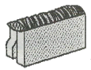

방사선비파괴검사기사 (2017-03-05 기출문제)
1과목: 비파괴검사 개론
1. 셀레늄(Selenium) 등의 반초에 뒤에 금속판을 대고 균일한 전하를 준 후 시험체를 투과한 방사선에 노퉁되면 방사선의 강도에 따라 반도체의 저항이 작아지고 전하가 이동하여 방전하게 되는데, 여기에 반대 전하를 도포하면 육안으로 확인 가능한 영상이 형성되며 이에 적절한 수지를 도포함으로써 영상을 형성할 수 있다. 이 원리는 이용하는 방법을 무엇이라고 하는가?
- 건식 방사선 투과검사법(Xeroradiography)
- 전자 방사선 투과검사법(Electronradiography)
- 자동 방사선 투과검사법(Autoradiography)
- 순간 방사선 투과검사법(Flash radiography)
(정답률: 66%)

2. 결함의 형상을 육안으로 확인할 수 있어 해석이 용이한 비파괴검사법만으로 조합된 것은?
- 방사선투과검사, 자분탐상검사
- 초음파탐상검사, 침투탐상검사
- 와전류탐상검사, 자분탐상검사
- 와전류탐상검사, 침투탐상검사
(정답률: 70%)
3. 부품의 체적검사에 적용되는 비파괴검사의 물리적 현상은?
- 전자파, 열
- 방사선, 초음파
- 전자파, 음파
- 침투액, 미립자
(정답률: 57%)
4. 침투탐상검사에서 침투액의 점성(Viscosity)은 침투액의 어떠한 성능에 가장 큰 영향을 미치는가?
- 침투력
- 세척성
- 형광성
- 침투속도
(정답률: 58%)
5. 압력용기 내에 있는 이상기체에 2배의 압력을 가하면, 이 이상기체의 부피는 몇 배가 되는가? (단, 온도는 일정하다.)
- 1/2
- 1
- 2
- 4
(정답률: 70%)
6. 주철에서 흑연의 구상화 원소가 아닌 것은?
- Mg
- Ce
- Ca
- Sn
(정답률: 40%)
7. 특정온도의 3원계 금속 상태도에서 3상으로 공존할 때의 자유도는 얼마인가? (단, 압력은 일정하다.)
- 0
- 1
- 2
- 3
(정답률: 55%)
8. 형상기억효과나 초탄성 현상을 나타내는 합금이 아닌 것은? (문제 오류로 실제 시험에서는 1번 4번 정답처리 되었습니다. 여기서는 1번을 누르면 정답 처리 됩니다.)
- N-Ti
- Cu-Al-Ni
- Cu-Zn-Al
- Al-Cu-Si
(정답률: 28%)
9. 실루민을 Na 혹은 NaF로 개량처리하는 주된 목적은?
- 공정점 부근 조성의 Si 결정을 미세화하기 위하여
- 공석점 부근 조성의 Si 결정을 미세화하기 위하여
- 공정점 부근 조성의 Fe 결정을 미세화하기 위하여
- 공석점 부근 조성의 Fe 결정을 미세화하기 위하여
(정답률: 62%)
10. 정적 하중으로 파괴를 일으키는 응력보다 훨씬 낮은 응력으로도 반복하여 하중을 가하게 되면 파괴되는 현상은?
- 마모(wear)
- 피로(fatigue)
- 크리프(creep)
- 취성파괴 (brittle fracture)
(정답률: 64%)
11. 분말야금의 특징을 옳게 설명한 것은?
- 절삭공정을 생략할 수 있다.
- 다공질 재료를 제조할 수 없다.
- 재료를 융해하여야만 제조가 가능하다.
- Fe계 제품의 금속표면층을 침탄으로 경화시킬 수 없다.
(정답률: 50%)
12. 황동 가공재를 상온에서 방치할 경우 시간의 경과에 따라 가공에 의한 불균일 변형(strain)이 균등화되어 경도 등 여러 성질이 악화하는 현상은?
- 패턴팅
- 용체화
- 가공경화
- 경년변화
(정답률: 56%)
13. 시효경화성이 있으며, Cu 합금 중에서 경도 및 강도가 가장 큰 합금계는?
- Cu - Ag계
- Cu - Pt계
- Cu - Be계
- Cu - Zn계
(정답률: 42%)
14. 순철의 변태에 관한 설명 중 틀린 것은?
- 동소변태는 A3와 A4 변태가 있다.
- Ar은 냉각변태, Ac는 가열변태를 의미한다.
- A2 변태점을 시멘타이트의 자기변태점 이라 한다.
- 자기변태는 자기적 성질이 변화하는 변태이다.
(정답률: 50%)
15. 46% Ni-Fe 합금으로 초기에는 Pt를 대용하는 전구 봉입선으로 사용하였으나 Dumet선이 개발되어 전자관, 전구, 방전램프 등 연질유리의 봉입부에 사용하는 것은?
- 라우탈(Lautal)
- 퍼말로이(Permalloy)
- 콘스탄탄(Constantan)
- 플래티나이트(Platinite)
(정답률: 37%)
16. 용접 후 용접변형에 대한 교정방법이 아닌 것은?
- 전진법
- 롤러에 의한 법
- 가열 후 해머질하는 법
- 얇은 판에 대한 점 수축법
(정답률: 47%)
17. 피복 아크 용접 작업에서 아크 발생을 4분, 아크 정지를 6분 하였다면 용접기 사용률은?
- 20%
- 30%
- 40%
- 60%
(정답률: 71%)
18. 다음 그림과 같은 용접이음의 명칭으로 옳은 것은?

- 겹치기 이음
- 변두리 이음
- 맞대기 이음
- 측면 필릿 이음
(정답률: 50%)
19. 피복 아크 용접에서 아크쏠림을 방지하기 위한 조치 사항으로 틀린 것은?
- 직류(DC)용접기 대신 교류(AC)용접기를 사용한다.
- 접지점을 될 수 있는 대로 용접부에서 멀리한다.
- 피복제가 모재에 접촉할 정도로 짧은 아크를 사용한다.
- 용접봉 끝을 아크 쏠림 동일방향을 기울인다.
(정답률: 59%)
20. 일반적인 용접의 특징으로 틀린 것은?
- 재료가 절약되고 중량이 가벼워진다.
- 기밀성, 수밀성이 우수하며 이음 효율이 높다.
- 재질의 변형이나 잔류응력이 발생하지 않는다.
- 소음이 적어 실내 작업이 가능하고 복잡한 구조물 제작이 쉽다.
(정답률: 60%)
2과목: 방사선투과검사 원리
21. 시험편의 두께가 x, 공동성 결함부의 두께가 △x일 때 필름 콘트라스트가 γ인 필름을 사용해서 촬영한 사진에 농도차가 △D만큼 생겼다면 이△D의 표현식으로 옳은 것은? (단, μ는 흡수계수이다.)
- △D = -0.434μγ△χ
- △D = -0.434μ△χ
- △D = 0.434μχ
- △D = -0.434μγχ
(정답률: 67%)
22. 방사선 투과검사에서 상질지시계(IQI, image quality indicator)를 사용하는 주된 목적은?
- 결함의 크기 측정
- 필름의 명암도 측정
- 필름의 콘트라스트 측정
- 검사기법의 적정성 점검
(정답률: 72%)
23. 방사성동위원소의 붕괴기구 중에서 중성자의 방출이 동반되어 중선자원으로 이용될 수 있는 것은?
- 감마선 방출
- 자발핵분열
- 알파입자의 방출
- 베타입자의 방출
(정답률: 60%)
24. 방사선투과시험에서 가하학적 불선명도에 영향을 주는 요인과 거리가 먼 것은?
- 선원의 종류
- 초점 또는 선원의 크기
- 선원과 시험체 사이의 거리
- 시험체와 필름 사이의 거리
(정답률: 61%)
25. Co-60의 비방사능은 다음 중 어느 것에 의존하는가?
- 물질이 원자로에 들어가 있는 시간
- 재료의 원자번호
- 방사성 동위원소의 에너지
- 재료의 영(Young)율
(정답률: 70%)
26. X선 발생장치 취급에 관한 설명으로 옳지 않은 것은?
- 전원 연결이나 분리 시 미리 전원을 차단한다.
- 여름철 작업 시에는 가능한 한 그늘진 곳에서 작동시킨다.
- 보관이나 운반 시 X선 발생장치 양극이 아래로 향하게 한다.
- 전원은 단상을 사용한다.
(정답률: 70%)
27. 선흡수계수가 0.693cm-1인 차폐체의 반가층은?
- 0.5cm
- 1.0cm
- 2.0cm
- 3.0cm
(정답률: 66%)
28. 필름상에서 농도계로 측정한 두 위치 사이의 농도차를 무엇이라 하는가?
- 명료도(definition)
- 콘트라스트(contrast)
- 감도(sensitivity)
- 반그림자(penumbra)
(정답률: 60%)
29. 일반적으로 방사선투과시험은 3차원의 상을 2차원의 평면에 기록하는 것이다. 이 때 발생되는 물리적 현상인 이것을 완전히 제거할 수는 없으나 선원-필름 간 거리를 적절히 조절함으로써 판독의 장해를 줄일 수 있다. 이것을 무엇이라 하는가?
- 결함의 왜곡
- 결함의 회절
- 결함의 축소
- 결함의 변질
(정답률: 57%)
30. X선 발생장치를 선택할 때 고려하지 않아도 되는 것은?
- 관전류
- 관전압
- 시험체의 두께
- 투과사진 농도
(정답률: 68%)
31. 투과사진의 결함에 의한 농도차(D2-D1)를 △D, 식별한계 콘트라스트를 △Dmin 이라 할 때 다음 식 중에서 결함이 식별되지 않는 경우는?
- △D = △Dmin
- △D = △Dmin x 1.1
- △D ＜△Dmin
- △D ＞ △Dmin
(정답률: 73%)
32. 방사선투과검사 시 촬영된 필름에 초승달 모양의 흰 자국이 생기는 경우로 가장 적절한 것은?
- 정착액이 약화되었을 때
- 현상 중 온도 변화가 심할 때
- 촬영 전 필름이 구겨졌을 때
- 촬영 후 필름이 구겨졌을 때
(정답률: 81%)
33. 방사선방호의 지본 체계(System of radiation protection)에 속하지 않는 것은?
- 행위의 정당화(the justtification of a practice)
- 방사선 방호의 최적화(the optimization of protection)
- 개인의 선량 및 리스크 한도(individual dose and risk limits)
- 방사선 피폭 최소화(the minimization of radiation exposure)
(정답률: 52%)
34. 방사선투과검사용 필름의 보관 방법으로 틀린 것은? (단, 필름 제조사의 특수 시방은 제외한다.)
- 습도는 통상적으로 40~60%, 온도는 약 21℃이하에서 보관한다.
- 습기나 방사선 등과 같은 주위 환경의 영향을 받지 않는 장소에 보관한다.
- 항상 필름은 눕혀서 보관하여야 하며, 유효기간이 짧은 것부터 사용하도록 조치한다.
- 화학 약품 저장실 등 화학 약품과 접촉할 우려가 있는 장소를 피한다.
(정답률: 79%)
35. X선 발생장치의 표적물질이 갖추어야 할 조건에 대한 설명으로 옳지 않은 것은?
- 원자번호가 높아야 한다.
- 융점이 높아야 한다.
- 열전도율이 높아야 한다.
- 증기압력이 높아야 한다.
(정답률: 73%)
36. 방사선의 하전입자가 물질 속을 통과할 때 단위의 길이당 상실하는 평균에너지를 무엇이라 하는가?
- 비전리
- 비탄성산란
- 제동방사
- 저지능
(정답률: 60%)
37. 방사선 투과사진의 농도를 측정할 때 투과광 강도가 입사광의 1/100로 감소되었다면 이 사진의 농도는 얼마인가?
- 0.3
- 0.6
- 1.0
- 2.0
(정답률: 42%)
38. 현상된 X선 필름의 유제입자가 고르지 않게 분포된 상태를 나타내는 용어는?
- 흰얼룩
- 입상성
- 줄무늬
- 오점
(정답률: 58%)
39. 관전압을 일정하게 하고 X선관의 전류를 증가시키면 파장은 어떻게 되는가?
- 최단파장은 감소한다.
- 최단파장은 증가한다.
- 최단파장은 변하지 않는다.
- 최고강도를 나타내는 파장은 증가한다.
(정답률: 66%)
40. 선원의 절대강도와 선원에서 떨어져 측정하였을 때 γ선의 강도 사이에는 비례관계가 일반적으로 성립되나 선원의 크기가 클 때에는 비례관계에서 벗어난다. 그 이유를 설명할 수 있는 것은?
- 분열(fission)
- 스넬의 법칙(snell's law)
- 자기흡수(self-absorption)
- 내부전환(internal conversion)
(정답률: 60%)
3과목: 방사선투과검사 시험
41. 현상된 방사선 투과사진은 규정하는 상질을 나타내어야 한다. 다음 중 상질을 확인하는 항목이 아닌 것은?
- 계조계의 값
- 결함의 유무
- 시험부의 사진 농도
- 투과도계의 식별 최소 선지름
(정답률: 87%)
42. 방사선투과검사에서 형광증감지를 사용할 때의 장점을 설명한 것으로 틀린 것은?
- 명료도가 향상된다.
- 강화인자가 커진다.
- 노출시간을 감소시킨다.
- 저선질로 두꺼운 물체를 촬영할 수 있다.
(정답률: 63%)
43. 다른 조건은 변하지 않고 X선관의 관전압을 상승시키면 파장과 투과력은 어떻게 변화하겠는가?
- 파장은 짧아지고 투과력은 저하된다.
- 파장은 짧아지고 투과력은 향상된다.
- 파장은 길어지고 투과력은 저하된다.
- 파장은 길어지고 투과력은 향상된다.
(정답률: 78%)
44. 전자파와 물질과의 상호작용 중 전자쌍 생성이 일어날 수 있는 광자에너지 준위는?
- 0.025 ~ 0.1MeV
- 0.1 ~ 0.5MeV
- 0.5 ~ 1.0MeV
- 1.02MeV 이상
(정답률: 66%)
45. 현상시간이 길어짐에 따라 필름특성곡선은 어떻게 변화하는가?
- 점점 가팔라지고 점차적으로 오른쪽으로 이동한다.
- 점점 가팔라지고 점차적으로 왼쪽으로 이동한다.
- 점점 완만해지고 점차적으로 오른쪽으로 이동한다.
- 점점 완만해지고 점차적으로 왼쪽으로 이동한다.
(정답률: 59%)
46. 공업용 X선 발생장치에서 일반적으로 사용되는 표적 물질은 무엇인가?
- 철(Fe)
- 텅스텐(W)
- 니켈(Ni)
- 주석(Sn)
(정답률: 65%)
47. 미시방사선투과검사(micro-radiography)에 사용되는 X선 발생장치의 일반적인 전압의 사용 범위한계는?
- 5 ~ 50kV
- 60 ~ 100kV
- 110 ~ 150kV
- 160 ~ 200kV
(정답률: 52%)
48. 필름과 방사선원의 거리가 1m였을 때 노출시간 100초로 좋은 사진을 얻었다. 필름과 방사선원의 거리를 1.5m로 변경했을 경우 동일한 질의 사진을 얻으려면 노출시간을 얼마로 하면 되는가?
- 150초
- 225초
- 250초
- 280초
(정답률: 74%)
49. 방사선 투과사진의 현상처리작업에 있어 현상온도가 선형적으로 높아짐에 따른 현상시간의 변화로 옳은 것은?
- 비례적으로 길어진다.
- 지수함수적으로 길어진다.
- 비례적으로 짧아진다.
- 지수함수적으로 짧아진다.
(정답률: 67%)
50. X선을 발생시키기 위한 기본 요구 조건이 아닌 것은?
- 전자의 발생선원이 있을 것
- 고속의 전자를 발생하여야 할 것
- X선 튜브의 고온을 냉각시킬 장치를 가질 것
- 전자의 충격을 받는 표적을 가질 것
(정답률: 73%)
51. X선을 이용한 방사선투과검사 시 필름의 회절반점이 기공이나 편석에 의한 지시와 혼동되는 현상을 방지하는 방법은?
- 관전류를 올린다.
- 선원-필름 간 거리를 늘린다.
- 관전압을 올린다.
- 필름의 종류를 바꾼다.
(정답률: 34%)
52. 방사선투과검사 시 투과사진의 상질을 높이기 위해 저에너지 방사선을 흡수, 제거시킬 목적으로 필터(Filter)를 사용하기도 한다. 일반적으로 사용되는 필터의 재질은?
- 재질 선택에 아무 제약 없음
- 구리 또는 황동
- 텅스텐
- 카드뮴
(정답률: 52%)
53. ASME 유공형 투과도계를 이용하여 촬영 시 식별번호가 20번이고 투과사진상에 2T 구멍이 나타났다면 식별도는 얼마인가? (단, 모재의 두께는 30mm이다.)
- 1.4%
- 1.7%
- 1.9%
- 2.1%
(정답률: 39%)
54. 공진 변압기형 X선 장비에 사용되는 냉각제는?
- 프레온가스
- 계면활성제
- 액체 산소
- 냉각수
(정답률: 54%)
55. 형광투시검사에서 상증배관의 역할이 아닌 것은?
- 전자의 방출
- 스크린의 밝기 조정
- 스크린의 필터 작용
- 정전렌즈에 의한 전자의 집적
(정답률: 34%)
56. 관의 원주용접부의 촬영방법 중 전원주를 동시에 촬영하는 방법은?
- 내부선원 촬영방법
- 내부필름 촬영방법
- 이중벽 편면 촬영방법
- 이중벽 양면 촬영방법
(정답률: 60%)
57. 일반적인 자동현상기의 주요 3부분에 해당되지 않는 것은?
- 필름주입구
- 필름현상처리부
- 필름건조부
- 필름관찰부
(정답률: 72%)
58. 방사성물질에 대한 방사선투과검사 시 고려해야할 사항으로 거리가 먼 것은?
- 시편-필름 간 거리는 콘트라스트를 높이기 위해 가능한 한 짧게 해야 한다.
- 필름의 종류는 시험체로부터 나오는 방사선에 의한 영향을 줄이기 위하여 속도가 느린 필름을 사용해야 한다.
- 시험체로부터 나오는 장파장의 방사선에 의한 영향을 줄이기 위해 필터를 사용하는 것이 좋다.
- 시험체와 필름 사이에 납 슬리트를 놓아 시험체로부터 나오는 방사선 중 슬리트를 통과하는 것들에 의한 영향만을 받게 함으로써 상질을 높일 수 있다.
(정답률: 42%)
59. V형 개선된 맞대기 용접부에 초층 용접아크가 불안정하여 루트부에 가늘고 긴 선상의 기공이 발생하였다. 이는 방사선투과사진에서 용접부 중앙에 긴 선상의 지시를 나타내는데 이를 무엇이라 하는가?
- 중공 비드(Hollow Bead)
- 융합 불량(Lack fusion)
- 용입 부족(Incomplete penetration)
- 블로 우홀(Blow hole)
(정답률: 46%)
60. 방사선 투과시험에 의한 결함 검출이나 판정이 가장 힘든 불연속부는?
- 기공(porosity)
- 라미네이션(lamanation)
- 텅스텐혼입(tungsten inclusion)
- 용입부족(incomplete penetration)
(정답률: 80%)
4과목: 방사선투과검사 규격
61. 알루미늄 주물의 방사선투과시험방법 및 투과사진의 등급분류방법(KS D 0241)에서 감도를 증가시키기 위해 사용하는 증감지의 두께 범위는?
- 0.01~0.25mm
- 0.02~0.25mm
- 0.01~0.50mm
- 0.02~0.50mm
(정답률: 45%)
62. 감마상수(조사선량률 상수)를 설명한 것으로 옳은 것은?
- 감마선 핵종 1 Ci로부터 1m 떨어진 곳에서의 방사선량률
- 감마선 핵종 1 Ci로부터 2m 떨어진 곳에서의 방사선량률
- 감마선 핵종 1 Ci로부터 5m 떨어진 곳에서의 방사선량률
- 감마선 핵종 1 Ci로부터 10m 떨어진 곳에서의 방사선량률
(정답률: 83%)
63. 강 용접 이음부의 방사선투과시험방법(KS B 0845)에 규정된 증감지가 아닌 것은?
- 낙밥 증감지
- 감광 증감지
- 형광 증감지
- 금속 형광 증감지
(정답률: 42%)
64. 알루미늄 주물의 방사선투과시험방법 및 투과 사진의 등급분류방법(KS D 0241)에 규정된 시험부 및 투과도계 위치에서의 필름 농도 범위는?
- 1.5~3.0
- 2.0~3.0
- 1.5~4.0
- 2.0~4.0
(정답률: 32%)
65. 강 용접 이음부의 방사선투과시험방법(KS B 0845)에 따라 모재 두깨가 10mm이고 한쪽 덧붙임이 있는 강 용접부의 평판 맞대기 이음부에 적용하여야 하는 계조계는?
- 15형
- 20형
- 25형
- 30형
(정답률: 84%)
66. 물체 표면의 방사성 오염을 간접적으로 측정할 때 가장 적절한 방법은?
- 스메어법을 이용
- GM 검출기를 이용
- 포켓 선량계를 이용
- 바이오 어세이법을 이용
(정답률: 54%)
67. 보일러 및 압력용기에 대한 표준방사선투과검사 (ASME Sec.V Art. 22 SE-94)에 규정된 필름 정착 시 행거를 교반하는 방법은?
- 10초간 수직교반시키고 30초 경과 후 재교반시킨다.
- 10초간 수직교반시키고 1분 경과 후 재교반시킨다.
- 30초간 수직교반시키고 30초 경과 후 재교반시킨다.
- 30초간 수직교반시키고 1분 경과 후 재교반시킨다.
(정답률: 67%)
68. 강 용접 이음부의 방사선투과시험방법(KS B 0845)에 따른 강관의 원둘레 용접 이음부의 2중벽 단일면 촬영 방법에서 시험부에서의 가로 균열의 검출을 특히 필요로 하는 경우 시험부의 유효 길이는?
- 관의 원둘레 길이의 1/2 이하
- 관의 원둘레 길이의 1/3 이하
- 관의 원둘레 길이의 1/4 이하
- 관의 원둘레 길이의 1/6 이하
(정답률: 45%)
69. 보일러 및 압력용기에 대한 표준방사선투과검사 (ASME Sec.V Art. 22 SE-94)에 규정된 촬영투과사진 현상 시 적정 세척 온도 범위는?
- 10~30℃
- 16~30℃
- 10~40℃
- 16~40℃
(정답률: 64%)
70. 내부피폭 방어의 원칙에 해당되지 않는 것은?
- 방사성물질의 고화
- 방사성물질의 격납
- 방사성물질의 농도 희석
- 내부오염 경로의 차단
(정답률: 58%)
71. .원자력안전법령에서 방사성동위원소 등의 이동사용 허가자가 방사선작업종사자의 건강진단기록을 보존해야 하는 기간은?
- 종사자 퇴사 후 1년간
- 종사자 퇴사 후 5년간
- 종사자 퇴사 후 10년간
- 사용을 폐지할 때까지
(정답률: 68%)
72. 보일러 및 압력용기에 대한 방사선투과검사 (ASME Sec.V Art. 2)에 따라 촬영한 투과사진의 기하학적 불선명도가 0.⑤mm였다. 시험체와 필름 사이의 거리를 5mm 증가시켰을 때 기하학적 불선명도는? (단, 선원의 크기는 2mm, 선원-시험체 간 거리는 400mm 이다.)
- 0.035mm
- 0.075mm
- 0.135mm
- 0.195mm
(정답률: 42%)
73. 강 용접 이음부의 방사선투과시험방법 (KS B 0845)에 따라 강판의 맞대기 용접 이음부를 상질 A급으로 투과사진을 촬영할 때, 선원과 시험부의 선원측 표면간의 거리(L1)는 시험부 유효길이(L3)의 몇 배 이상으로 하는가?
- 2배
- 3배
- 4배
- 5배
(정답률: 46%)
74. 원자력안전법령에서 규정한 등가선량의 단위는?
- 렌트겐(R)
- 그레이(Gy)
- 시버트(Sv)
- 주울(J)
(정답률: 44%)
75. 강 용접 이음부의 방사선투과시험방법(KS B 0845)에서 결함이 용접 이음부의 강도 저하에 미치는 영향을 나타낸 것 중 틀린 것은?
- 파이프에 의한 응력 집중
- 용입불량에 의한 응력 집중
- 갈라짐에 의한 단면적의 감소
- 둥근 블로우홀에 의한 단면적의 감소
(정답률: 50%)
76. 보일러 및 압력용기에 대한 표준방사선투과검사 (ASME Sec.V Art. 22 SE-94)에 규정된 수적 방지제의 적용 방법은?
- 필름의 수적방지제에 약 5초간 침지(dip)한다.
- 필름의 수적방지제에 약 10초간 침지(dip)한다.
- 필름의 수적방지제에 약 15초간 침지(dip)한다.
- 필름의 수적방지제에 약 30초간 침지(dip)한다.
(정답률: 59%)
77. 차폐제에 사용되는 물질이 동일한 두께일 경우 방사선투과검사에 사용되는 Ir-102에 대한 차폐효과가 가장 큰 물질은?
- 철
- 납
- 알루미늄
- 콘크리트
(정답률: 59%)
78. 강 용접 이음부의 방사선투과시험방법(KS B 0845)에 따라 결함을 분류할 때 제3종의 결함이 존재하는 경우의 결함 분류는?
- 1류
- 2류
- 3류
- 4류
(정답률: 79%)
79. 보일러 및 압력용기에 대한 표준방사선투과검사 (ASME Sec.V Art. 22 SE-1025)에 규정된 직사각형 상질계의 재료그룹에 해당되지 않는 것은?
- 아연
- 티타늄
- 마그네슘
- 알루미늄
(정답률: 60%)
80. 방사선작업종사자가 Ir-192 10 Ci로부터 5m 떨어진 거리에서 6분간 머물렀다면, 종사자가 받은 피폭선량은? (단, Ir-192의 감마상수는 5mSv/hr이다.)
- 0.1 mSv
- 0.2 mSv
- 1 mSv
- 2 mSv
(정답률: 25%)